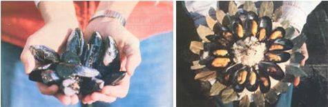

Anyone who lives (or vacations) near either of North America's coasts can grow (or gather) a supply of good seafood!
Nearly everyone who's been to the seashore has encountered mussels . . . the sharp-shelled mollusks that cling in huge colonies to rocks, ropes, and pilings. However, many folks don't know that - besides being among the most common North American coastal shellfish - mussels are one of the sea's best sources of food. They're easy to gather . . . high in protein, minerals, and vitamins B-1 and B-2 . . . and extremely tasty . Furthermore, under proper conditions the little saltwater wonders can be farmed , harvested, and sold at a nice profit!
A SHELLFISH SAMPLER
There are several varieties of this prolific mollusk, and a majority of the species are edible . . . though not all of them are palatable. Most seafood fans feel that the Northern Blue Mussel ( MytiLus edulis ), with its blue black shell and deep violet interior, is the sweetest and most delicious. Abundant from the Arctic to Cape Hatteras, the "blue" is found in most eastern American waters north of the 35th parallel, as well as in Europe . . . in a few coastal areas of California (where it's been introduced) . . . and even in parts of the Southern Hemisphere.
Only a bit less tasty, in the opinion of most folks, is the Modiolus rectus - a glossy, dark brown mussel with a white interior - which is found from Vancouver, B.C. to southern California . . . and Mytilus californianus , the light brown California Mussel. (However, a number of varieties that flourish along the southeast coast - from New Jersey to Florida - are usually thought of as barely edible. These include the Atlantic Striated Mussel, Modiolus demissus , and the Bent or Hooked Mussel, Mytilus recurvus . )
The common shellfish are very easy to gather . . . all a hungry forager has to do is locate a colony of mussels and pry his or her dinner loose from its moorings. The specimens residing in deeper water will be the plumpest, because they've had the best opportunity to feed. While those found higher up on the beach are not poisonous , as some folks believe, they are less meaty (the shallow water clusters are also more likely to include dead shellfish).
COMMONSENSE CAUTION
Since mussels feed on plankton and other microscopic organisms, they can absorb toxic substances, including those resulting from industrial or residential pollution. Therefore, any expedition to gather shellfish (clams, oysters, or mussels) should begin with a call to the local health department to see whether the waters are polluted or afflicted with "red tide" . . . the name given a phenomenon - caused by certain plankton - that can make all mollusks in an area temporarily poisonous. (Because of the latter naturally occurring hazard, mussels are quarantined, along the California coast, from May to October . . . and in other regions during various portions of the warm-water seasons.)
The saxitoxin that the microscopic organisms create is a powerful paralyzer for which there's no antidote. If you take in enough, you'll go numb all over and stop breathing, sometimes within half an hour.
Other than the lab tests which health departments routinely make, there's no easy way to know when your area's shellfish might be affected by a red tide. (Some people think that the "glow" that sometimes appears in sea water - also caused by micro-organisms, and called "bioluminescence" - is a sure signal of danger . . . but some luminescent plankton is nontoxic, and some toxic plankton is nonluminescent. )
Nor can you you lessen the poisonous effects through any method of cooking or pickling. And don't count on a small "taste test" to warn you, because - during heavy plankton blooms a single, three-inch mussel could be deadly. Play it safe and check with the health department before you gather!
(A mild case of shellfish poisoning begins with numbness and tingling around the lips and tongue and moves to the face and neck. There may also be a "prickly" feeling in the toes and fingertips as well as some dizziness, headache, and nausea. If the problem is more severe, the speech will become incoherent . . . the limbs prickly, stiff, and uncoordinated. There may be a rapid pulse and some problem in breathing. Extreme saxitoxin ingestion is characterized by great breathing difficulty, muscular paralysis, and choking. If you experience any of these symptoms after eating any shellfish, have someone take you to the hospital right away.)
FORAGE A FEAST
Once you've checked and found that your waters have been declared safe for shellfish foraging, get whatever license might be required (the local Fish and Game Commission office can give you all the necessary information). Then - equipped with a sharpened tire iron or heavy-bladed knife and a gunnysack or other container - you can set out, at low tide, on your search.
Mussels are tastiest when they're from two to three inches long. As you gather them, make sure the shells are closed tightly - or that they snap shut when you grab the creatures - and don't collect any mollusks that are full of sand. (To avoid taking more than you can use, keep in mind that two dozen mussels per person will constitute a hefty meal! )
Back at home, your harvest should be scrubbed clean and the "beard" ( the byssus threads that mussels spin to attach themselves to inanimate objects and to one another) should be pulled out or clipped off just prior to cooking. (They can be left on as "handles" if you plan to eat the mussels right out of the shell.)
Prepare the marvelous morsels as soon as possible after you gather them. If you can't consume your catch right away, however, you can keep them - on ice or in cold fresh water - for a day or two.
You'll find the little mollusks easy to cook. You can steam them in wine, beer, or water (use about 1/2 cup of liquid for two dozen mussels, and let them simmer for eight minutes) or bake them at 400°F, with 1/2 cup of liquid, for 15 to 18 minutes. They'll "announce" when they're ready by opening wide. ( Remember that the less the shellfish are cooked, the better they'll taste . . . and that the meat tends to shrink if it's overdone.) The following recipes are just a few of the ways you can prepare your foraged feast:
STEAMED IN BEER
Cook a couple of slices of onion and some garlic ( the amount of which will be determined by your enthusiasm for the aromatic herb) in 3 tablespoons of butter . . . then add 1/3 cup of minced parsley, some pepper, and 1/2 cup of brew. Put this mixture in a Dutch oven with a couple of dozen freshly scrubbed mussels, and let them simmer for 8 or 10 minutes (or, again, until the mollusks have opened . . . throw away any mussel that stays closed). Serve the seafood with melted butter and napkins!
MUSSEL CHOWDER
Steam a few dozen mussels in water and remove the meat. Then strain the juice through cheesecloth and add clam juice (if needed) to make 1-1/2 cups of liquid. Chop and sauté an onion, a stalk or two of celery, and a few carrots in butter and add a touch of rubbed thyme, a bay leaf, and a cup of chicken broth. Combine this with the "mussel juice" and cook a cup of diced potatoes in it. In 15 minutes add the shellfish meat, 1-1/2 cups of half-and-half, and a bit of parsley. Heat it again to serve, but don't let it boil.
MUSSELS AND RICE
Fry up 1 medium-sized onion, 1 cup of mushrooms, and some garlic (to taste). Pour in the rice ( use 1 cup to serve 4 people) and let it cook for 3 minutes. Add 1/2 cup of pitted, black olives and 1/2 cup of sweet pimentos. Using mussel juice (strained) or chicken broth, add 2 parts of liquid to 1 part rice. Cook the dish for about 15 minutes, or until the juice is absorbed, on medium-low heat. Stir in the meat of a few dozen steamed mussels (and a dozen or more shrimp, if you have them on hand) . . . cook the mixture for 2 more minutes . . . and sprinkle it with parsley before serving.
[EDITOR'S NOTE: For some other delicious mussel recipes, see Euell Gibbons' Stalking the Blue-Eyed Scallop (David McKay Company, Inc., $3.95), which is available in many bookstores and libraries.]
MUSSEL FARMING
Now that you know how easy it is to gather mussels, you may think it's ridiculous to talk about raising them. But cultured mussels have a number of advantages over their wild cousins. First, homegrown shellfish are usually meatier and better tasting. Second, the foraged mussels sometimes contain ugly black "pearls", harmless but crunchy parasites not found in the farmed variety. Third, the domesticated mollusks are more readily available, and - when you grow your crop suspended from floats - you don't even have to wait for low tide to harvest. Finally, cultured mollusks are easier to market .
There are a number of ways of raising mussels. In Holland, "seed" shellfish spawn are spread along the bottom of shallow inland seas where they grow to maturity, while in France it's common to see the mollusks thriving on oak poles driven into the ocean bottom. The most popular and successful method, worldwide, is to grow them on ropes suspended from rafts.
The easiest technique for a family -sized saltwater crop, however, is simply to culture the mussels on the pilings of an old pier. Assuming that you can obtain permission to utilize such a structure, you'll be able to start farming for a minimal investment. The mollusks will either grow there of their own accord, or you can gather small mussels from a low-tidal bed ( collect them from an area with few barnacles, if you can find such a spot) and transplant them to the posts from June or July through September.
Medium-gauge netting will hold the "youngsters" in place for the two weeks or so it will take for them to become attached to the poles. Once that happens, you can work at thinning them and keeping away predators ( mostly starfish, sea squirts, perch, flounder, moonsnails, oyster drills, crabs, and birds) . . . or you can just let nature take its taxes, and keep the survivors for yourself.
Most successful commercial mussel farmers, on the other hand, find that the raft method allows the most efficient use of space, and - because most of the creatures that prey on the mollusks are bottom dwellers - keeping the culturing ropes off the sea bed protects the crop. (Should you plan to use this system, however, you must accept the fact that the public has not always been eager to welcome mussel rafts. If you encounter such a problem, you'd better brush up on your public relations skills and perhaps offer to split your harvest with one or two waterfront landowners.)
The technique of "raft ranching" is a simple one. You merely anchor your structure in a bay or cove which already has a mussel population, and encourage the spawn to grow on ropes suspended from the float. Most farmers use wooden platforms or old rubber tires buoyed with foam (or some other flotation material). It could be a bit expensive to construct a raft from scratch, but you can often buy old floats or docks at reasonable prices. ( You can even use a few tied-together logs, but such assemblies usually sink after a year or two.)
The exact methods of operating a mussel-raising raft differ a lot from coast to coast, and even from one bay to the next. In general, the platforms are placed in waters which have only light currents and are between 30 and 60 feet deep. Nylon or Manila ropes are then spaced some 30 inches apart and allowed to hang 10 to 30 feet down into the water . . . with four-inch-long sticks ( lengths of half-inch-diameter dowel will do) placed every two feet or so to keep the mussels from sliding off the lines.
(The only way to find out exactly what depth and cord spacing will work best is to experiment . . . unless you can find another - successful - mussel farmer in the same cove and copy his or her system.)
CATCHING THE SPAT
As you might well imagine, getting the mussels to settle on your ropes is sometimes tricky. The "spat", as mussel spawn is called, is produced in the late spring. It will attach to almost any substrate it can find, but if your ropes are set out too soon, other creatures ( such as barnacles) may take up the space. On the other hand, if you wait too long to position your lines, there may not be enough spawn to give you a good harvest. The spat usually begins in early May, and your crop - if you get one - will become apparent by the end of July.
The spat sets best in the upper two or three meters of water, so you can either plan to thin the mussels and reposition some of them along the length of the rope (a lot of work), or simply run the rope - horizontally - in the top layers of water during the setting season. In Spain, where the accumulation of great numbers of mussels often makes thinning necessary, the outer layers of shellfish are routinely stripped off and attached to new ropes with water-soluble rayon . . . which will rot away as the mussels form webs of their own.
(Any thinning or transplanting should be done on overcast days, since bright sunshine hinders the byssus growth ... and, even though mussels are generally thought to favor water with a high light intensity, experiments have shown that their weight gain can be increased by as much as 69% by placing sun screens over the timber framework from which the ropes are suspended.)
Your crop will reach good eating size (two inches, plus) in 12 to 15 months, but the precise time of harvest is always, of course, controlled by red tide conditions. The yield will vary, but five pounds of mussels per foot of rope per year is about an average figure for a good operation. (Current prices range from $1.00 to $2.00 a pound, cleaned off and delivered - alive and still in their shells - to restaurants.)
Harvesting can be a chore or very easy, depending on how much care you take. It's possible to raise each line and pick off only the salable mussels . . . but the procedure is time-consuming. A better method - according to many Maine shellfish farmers - is to take off all the mussels, and then put any too-small ones back on the ropes.
Wash the mollusks well before you market them, getting rid of the worst clumps of trash, dead shells, stones, and so forth. But don't break up the mussel clusters themselves unless your buyer insists; since - if you pull out the threads from the insides of the little creatures and thereby damage them - you'll find it difficult to get your entire crop to market alive.
DEADLY RED TAPE
Naturally, there are obstacles that can make setting up a successful mussel farm pretty difficult. The worst of them is probably that hideous creation known as "red tape". Getting permission to put in a mussel raft requires filling out sheaves of forms. The Army Corps of Engineers has to rule on your hazard to navigation . . . the county must decide whether or not you'll be in compliance with local zoning . . . and every state agency imaginable must - it appears - rule on your application.
The permit process for a big operation could take as much as a year to 18 months and cost several hundred dollars. There is no way to get around the procedure, and only a few things you can do to ease your way through it. First, keep your proposal simple. The less expensive your raft (and the less ambitious the plan), the less you're likely to be hassled by the bureaucrats. Second, talk to anyone and everyone who has been through the process before. And third, apply for as many permits simultaneously as possible ( an approach which involves more work initially but, with luck, will shorten your wait).
If you're serious about "going commercial" with mussels, you may have to do your own recruiting of restaurants that will buy your crop . . . and that can involve selling the "idea" of mussels as well. Certainly, no restaurant will buy mussels from an unlicensed and uncertified shellfish dealer (check with the health department, again, to learn the requirements).
Your crop must be inspected regularly to insure that it hasn't been affected by "red tide" or pollution. While the state will usually pick up the tab for such tests, in some places (especially California) health departments haven't been anxious to grant permits for mussel farms, because they don't feel they have the manpower to check on such operations. You'd better be sure, then, that your product can be inspected regularly before venturing very far into largescale mussel cultivation.
Also, be sure to take advantage of the reams of available information on raising your sea crop. A lot of universities are interested in ocean farming, so a call to nearby institutions of higher learning may bring as much help as anyone could need!
|
 LEFT: Just-harvested mussels are a treat to the eyes of an in-the-know seafood lover. The sharp-shelled mollusks ? which are the most plentiful shellfish along North American coastlines ? are often neglected in favor of more exotic (and less nutritious) bounty from the deep. A skillful-forager ? armed with a sharpened tire iron or heavy-bladed knife and a gunnysack ? can soon pack home a passel of the plump beauties (they taste best when they're two to three inches long) if he or she begins mussels hunting at low tide. Any beachcomber, however, would be well advised to check with the local health department or fisheries authorities before gathering the delectable edibles . . . since industrial or residential pollution may have affected mussel beds. If you're truly enamored of the tasty mollusk, you'll be pleased to learn that new methods have been developed and refined which allow you to raise the shellfish. . . and ? if you'd like ? even market your surplus to local seafood outlets or restaurants. RIGHT: Mmmm-mmmmm ... steamed mussels ? fresh from the sea ? served on the half shell with rice: just one savory, easy-to-prepare dishes you can whip up in a flash with the marvelous morsels. |
|
|